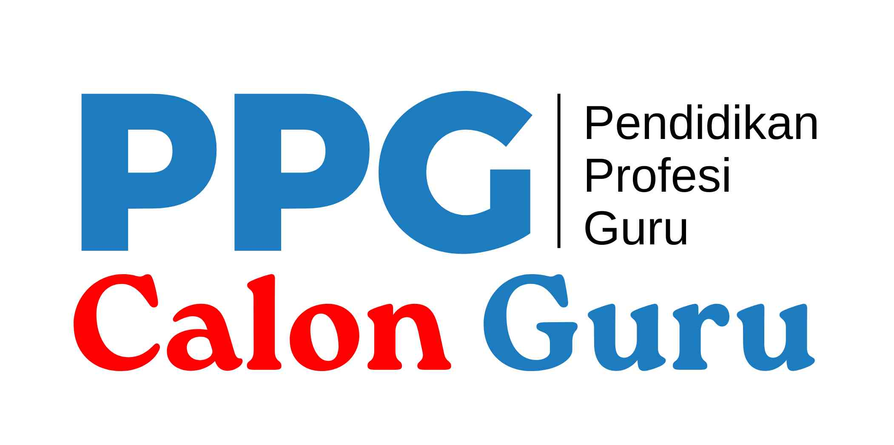
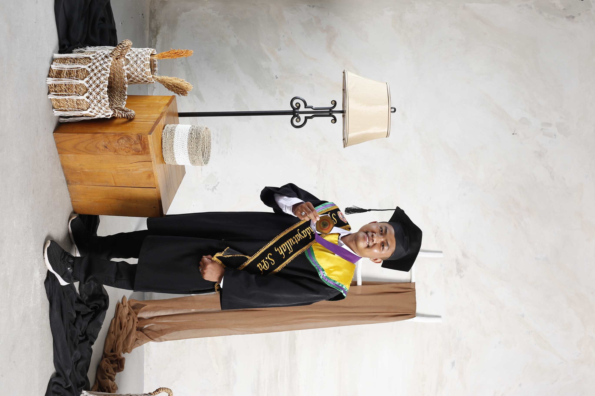
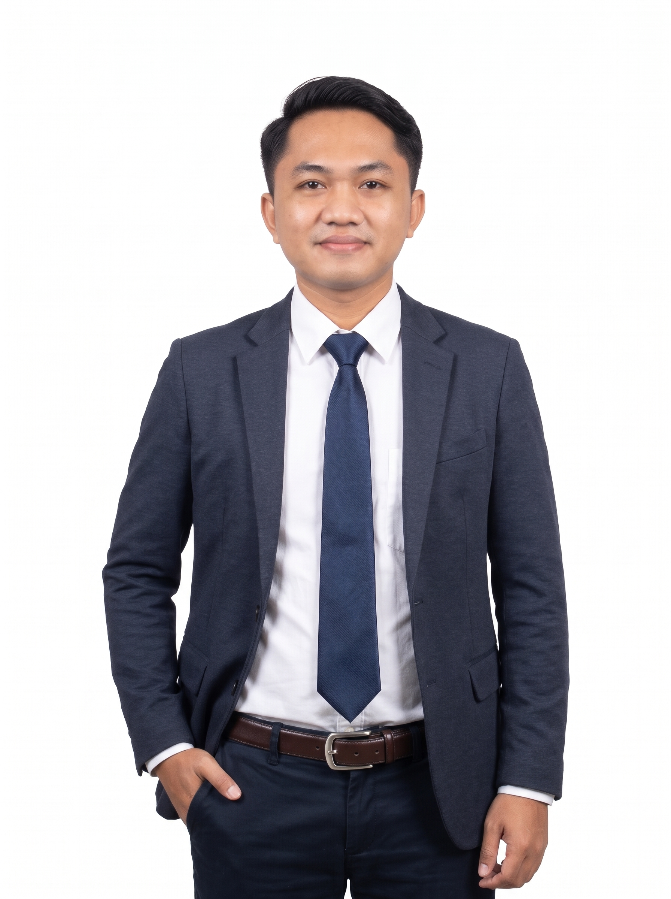

Seminar PPG | Refleksi Semester II

PPG Calon Guru 2026 | ULM Banjarmasin
"Melanjutkan perjalanan sebagai calon guru profesional. Di semester ini, saya mendalami praktik mengajar mandiri, projek kepemimpinan, dan inovasi pembelajaran berbasis kearifan lokal lahan basah."

Telusuri setiap bagian untuk melihat identitas dan refleksi pengalaman belajar saya.
Profil, visi misi, dan nilai-nilai yang saya pegang sebagai calon guru Informatika profesional.
SelengkapnyaRefleksi 4C dalam kotak visual, PDF refleksi, dan analisis artefak dari 5 mata kuliah semester II.
SelengkapnyaHubungi saya untuk kolaborasi, diskusi, atau berbagi praktik baik seputar pendidikan dan Informatika.
Selengkapnya"Setiap orang menjadi guru, setiap rumah menjadi sekolah."
— Ki Hadjar Dewantara
Mengenal lebih dekat calon guru yang adaptif, reflektif, dan berkomitmen pada pendidikan berkualitas.

Syarif Hidayatullah, lahir dan besar di Abung Wirajaya, Kecamatan Limpasu, Kabupaten Hulu Sungai Tengah, Kalimantan Selatan — sebuah daerah yang menyimpan pesona alam perbukitan yang menghijau, udara pegunungan yang segar, dan hamparan sawah yang membentang luas. Masyarakat di sana dikenal dengan kearifan lokal yang kuat, hidup dalam ikatan kekeluargaan yang erat, serta menjunjung tinggi nilai-nilai religius dan semangat gotong royong yang diwariskan secara turun-temurun.
Sejak kecil, saya dibesarkan dalam lingkungan yang sederhana namun kaya akan nilai-nilai kehidupan, di mana setiap warga saling membantu dan menghargai satu sama lain dalam suka maupun duka. Latar belakang inilah yang membentuk karakter saya sebagai pribadi yang adaptif, reflektif, dan peduli terhadap sesama — nilai-nilai yang saya bawa dalam perjalanan menjadi calon guru Informatika.
Apam Barabai, Lamang, Kue Lam
Batumbang Apam, Aruh Adat, Tari Surung Apam, Musik Panting
Tugu Burung Anggang, Riam Bajandik & Pulau Mas, Manggasang
Huma Betang, Semangat Gotong Royong, Mufakat & Religius
"Menjadi pendidik Informatika yang profesional, adaptif, dan inspiratif — mampu membimbing peserta didik menguasai teknologi digital secara bijak, berkarakter, dan berdaya saing, serta berkontribusi nyata dalam mewujudkan pendidikan Indonesia yang merata, bermakna, dan berlandaskan nilai-nilai Pancasila."
Merancang pembelajaran Informatika yang kontekstual, berpusat pada murid, dan mengintegrasikan teknologi dengan kebutuhan nyata peserta didik.
Menerapkan pembelajaran berdiferensiasi berbasis pemetaan ZPD dan scaffolding bertahap agar setiap murid berkembang sesuai kemampuannya.
Menanamkan nilai kejujuran, tanggung jawab, gotong royong, dan keadilan sosial dalam setiap kegiatan pembelajaran.
Membangun kelas yang mendorong pola pikir bertumbuh, menormalisasi kesalahan sebagai bagian dari belajar, dan menguatkan 'The Power of Yet'.
Membangun komunikasi aktif dengan keluarga dan masyarakat sebagai bagian dari ekosistem pendidikan yang mendukung tumbuh kembang murid.
Terus belajar, berefleksi, dan beradaptasi melalui inkuiri kolaboratif bersama rekan sejawat, guru pamong, dan dosen pembimbing.
"Pendidikan adalah daya upaya untuk memajukan bertumbuhnya budi pekerti, pikiran, dan tubuh anak."
— Ki Hadjar Dewantara
Refleksi 4C, PDF refleksi, dan analisis artefak dari 5 mata kuliah semester II.
Terbuka untuk diskusi seputar PPG, media pembelajaran, atau pengembangan web edukasi.
hidayatullahsyarif343@gmail.com
Syarif Hidayatullah
@syarifmhmd